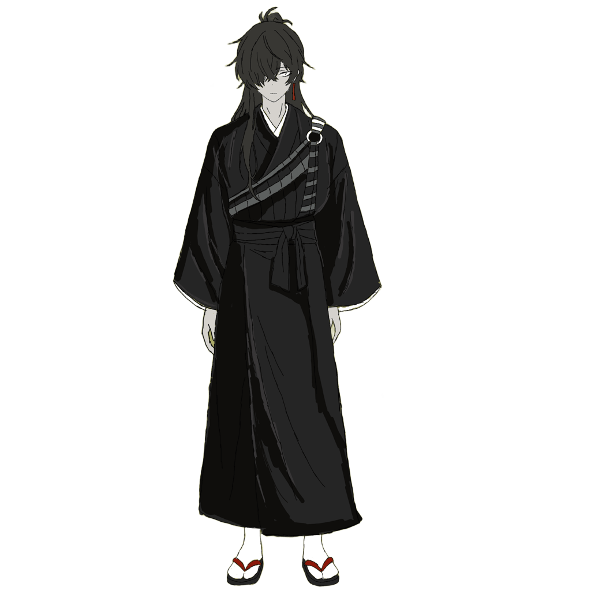

性格
悲観主義者の努力嫌い。加えて全般的に損をしやすい性格。いつも金がないが、お人好しなので野良猫に自分の食べようとしていたものをあげてしまう癖がある。人間よりも動物が好きらしい。また、致命的に運が悪い。買いたいものはいつも売り切れで、大金を持っている日は必ずスリに遭う。
仕事について
店を構えているわけではないが、地面に転がる彼の元へわざわざ己の運命を占ってもらいたがる客には事欠かない。生まれた時から彼には「星」が見えていた。彼にとって占いとは特別なものでは一切なく、単に目に浮かんだ星の軌道を他者にもわかりやすい形に翻訳して伝えるだけの行為である。
過去
表の街で生まれ育ったが、視界の裏にいつもちらつく星の存在が煩わしく、何よりもそれが語る己の運命が恐ろしかった。故に地下空間である暗黒中華街へと自らの意思で逃げ出してきた。しかし空など見えないはずのこの街でも、やはり彼の瞳は星を観測し続けた。
どこへ走ろうとも、星から逃げ切ることなどできようもないのだ。最終的には彼は諦観に身を任せ、運命に自身を委ねることに決めた。
能力
星見の力を持つ。彼の占いが外れることは決してなく、今までにただ一度たりとも星が描く未来を上書きできたことはない。占いで見える情報は非常に断片的であり、時として複雑な解釈工程を要する。